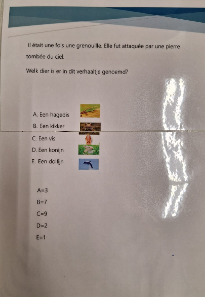
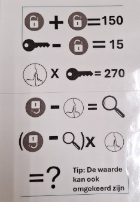
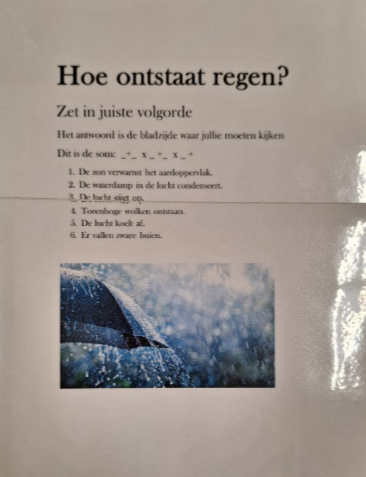

Vakken
Escape room project
Dit is de uitleg/het vak van de puzzel!

Puzzel 1
Dit is de Frans puzzel.
Er staat een zinnetje in het Frans en eronder een paar antwoorden.
Het doel van deze puzzel is dat je het dier opzoekt in de zin met behulp van een woordenboek.
Als je dat goed had gedaan kwam je op het antwoord dat de grenouille (kikker) het goede antwoord was.
Dan kwam je op het antwoord 7.

Puzzel 2
Dit is de 2e puzzel, het is een rekenpuzzel. Je moet de som oplossen door middel van icoontjes.
Maar er is ook een omgekeerd icoon, daar moest je i.p.v. 75 57 invullen.
Uiteindelijk moest je op het antwoord 9 komen.

Puzzel 3
Dit was onze 3e puzzel, hier moest je het economische verhaaltje in de juiste volgorde zetten d.m.v. de regenboog.
Dan kwam je op de zin:
Een belastingsmedewerker verdient 4540,00 per jaar, een wijkpolitie verdient 540 minder.
Een 14-jarige die bij de IKEA werkt verdient het salaris van een wijkpolitie gedeeld door 2000.
Hoeveel verdient de 14-jarige die bij de IKEA werkt?
Het antwoord was dan 2.

Puzzel 4
Dit was de laatste puzzel. Je moest de zinnen in de juiste volgorde zetten, daarna kwam je bij het ontstaan van regen.
Daarna moest je met de antwoorden een som doen.
Als je dat goed had gedaan kwam je bij het antwoord 30.
Daarna moest je naar bladzijde 30, dat was een witte bladzijde. Met een UV-pen kwam de zin tevoorschijn:
De hoge getallen gaan altijd voor!
De vakken die we hiervoor hadden gebruikt waren dus: Frans, wiskunde, economie en aardrijkskunde.